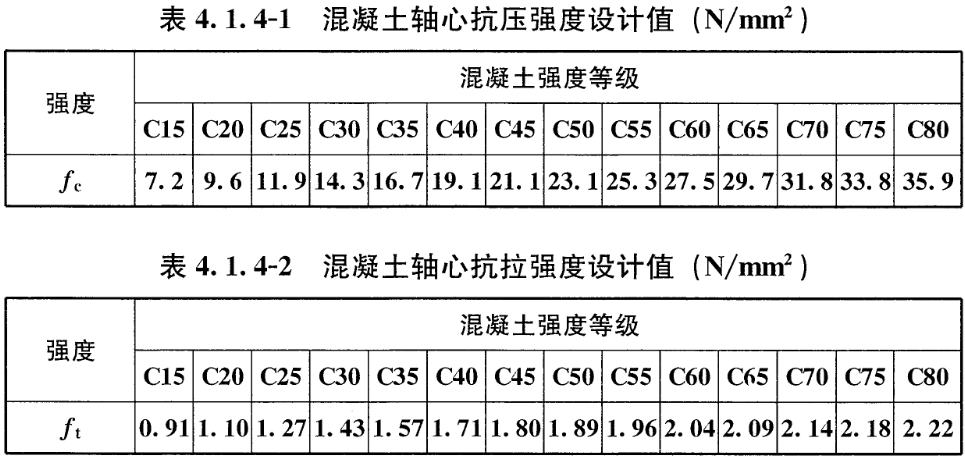
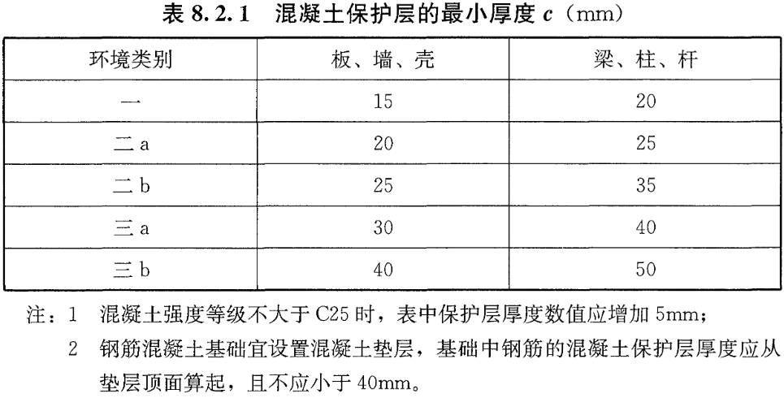
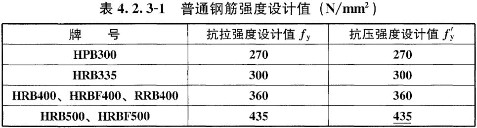
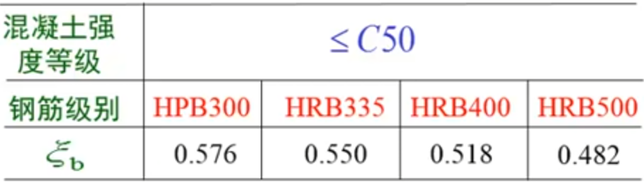

单筋矩形截面配筋计算
基本信息
钢筋砼构件类型：
梁
板
柱
弯矩设计值(M)：
kN·m
梁宽(b)：
mm
梁高(h)：
mm
混凝土强度等级：
C15
C20
C25
C30
C35
C40
C45
C50
C55
C60
C65
C70
C75
C80
混凝土轴心抗压强度设计值(f
c
)：
N/mm
2
查看规范
混凝土轴心抗拉强度设计值(f
t
)：
N/mm
2
查看规范
×

环境类别：
一类
二a
二b
三a
三b
混凝土保护层厚度(c)：
mm
查看规范
×

钢筋牌号：
HPB300
HRB335
HRB400
HRB500
钢筋抗拉强度设计值(f
y
)：
N/mm
2
查看规范
×

界限相对受压区高度(ξ
b
)：
查看参考值
×

受拉钢筋直径(d)：
6
6.5
8
12
14
16
18
20
22
25
28
32
40
50
mm
箍筋直径(d
1
)：
6
6.5
8
12
不使用箍筋
mm
计算结果
截面面积：
mm
2
是否少筋：
是否超筋：
配筋方案：
配筋方案示意图：
3B22
计算原理
有效高度 `h_{0}= h-(c+0.5d+d_{1})`
力矩平衡方程：`M\leq M_{u}=\alpha_{1}f_{c}b( h_{0}-\frac{x}{2})\Rightarrow` 等效受压区高度 `x=h_{0}-\sqrt{h_{0}^{2}-\frac{2M}{\alpha_{1}f_{c}b}}`
拉压平衡方程：`\alpha_{1}f_{c}bx=f_{y}A_{s}\Rightarrow` 受拉钢筋截面面积 `A_{s}=\frac{\alpha_{1}f_{c}bx}{f_{y}}`
相对受压区高度 `\xi=\frac{x}{h_{0}}`
配筋率 `\rho=\frac{A_{s}}{bh_{0}}`
不超筋条件：`\xi\leq \xi_{b}`
不少筋条件：`\rho\geq \rho_{min}=max(0.2%, 0.45\frac{f_{t}}{f_{y}})`
南科Robin的工具箱
之
单筋矩形截面配筋计算
(
软著登字第13562490号
) 联系人：
刘小龙
本报告由
南科Robin的工具箱
提供，
。